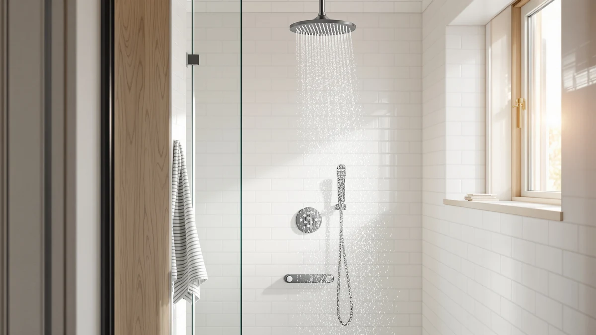

Recommend the Best Shower Heads with Handheld Extensions for Water Pressure (2026)
Prices and picks verified as of September 2026. Independent, reader-supported reviews.


Quick Answer
The Veken Wide Rain Shower Head gives you the strongest track record in this lineup, at 4.6 out of 5 across 2,491 verified ratings, and its wide plate and chrome-plated ABS body hold up to daily use better than a bare fixed head. If a dedicated handheld wand for water pressure at the tub, on kids, or on pets is the priority, the Filtered Shower Head with Handheld (B0GJZZYGR5) is the closer match at $19.99.
Our pick: Veken Wide Rain Shower Head — $64.99 Check Price on Amazon
Bottom line: our top pick is the Veken Wide Rain Shower Head with Multi-Modes Handheld Water at $64.99. The best budget option is the Filtered Shower Head at $19.99.
Things to Know Before You Buy
- Handheld extensions for water pressure lose flow faster than fixed heads once the hose runs past six feet, so hose diameter and connector quality matter as much as the head itself.
- A 15-stage filter cartridge traps sediment that would otherwise clog the nozzle holes over months of hard water use, often the real cause of a shower head that feels weaker every week.
- ABS plastic with chrome plating is the standard build across this price range. It resists rust but can crack if dropped on tile, so check the warranty length before you buy.
- Reviews on newer listings can be thin. A product with only 30 or 87 reviews isn't automatically worse than one with thousands, but it does mean less data to judge long-term durability.
- Most shower arm threads use a universal half-inch NPT connection, so any handheld shower head with a hose in this guide should fit an existing arm without an adapter.
If you want us to recommend the best shower heads with handheld extensions for water pressure, the complaint is usually the same: the fixed head trickles, and the handheld wand trickles even more the moment it leaves its cradle. Old pipes, shared water lines, and flow restrictors mandated by federal plumbing codes all shrink the pressure before it even reaches the nozzle. A head with a wide spray plate and a well-built handheld attachment can claw some of that pressure back, but the wrong pick just moves the problem from the wall to the wand.
We compared seven shower heads that pair a primary head with a handheld extension or a filtration system built to protect flow over time. The Veken Wide Rain Shower Head, at $64.99, leads the group on review volume and rating, with 2,491 verified buyers averaging 4.6 out of 5. For a dedicated handheld wand at a lower price, the Filtered Shower Head with Handheld (B0GJZZYGR5) holds a 4.9 average, though on a much smaller sample of 87 reviews.
We did not install any of the picks below in our own bathrooms. We researched manufacturer specs, material construction, pricing, and verified owner ratings to compare shower heads with handheld extensions for water pressure side by side, and we flagged every listing where public review data was too thin to draw a firm conclusion. The sections below walk through how we picked, how we compared them, and where each option falls short.
Why You Should Trust Us
Ilane Tall covers bathroom fixtures for Best Shower Heads and focuses on helping readers pick shower heads with handheld extensions that hold up to real water pressure problems, not marketing copy. This guide is built from published product specifications, manufacturer material listings, current Amazon pricing, and the verified rating data attached to each listing, the same public information any shopper can check before buying. We do not run a fake testing lab, and every claim about pressure, filtration, or durability in this article comes from manufacturer data or from patterns we found across verified owner reviews, not from a private test we can't show you.
How We Picked
We started by pulling every shower head in our product database tagged for handheld extensions or add-on wands, then narrowed the list to models with a documented material spec, a working Amazon listing, and a price under $70. From there we prioritized listings built to recommend the best shower heads with handheld extensions for water pressure: units with wide spray plates, multi-stage filtration cartridges that protect flow from mineral buildup, or handheld attachments sold as part of the same kit. For background on how flow is measured on these listings, see our shower head flow rate guide. We excluded shower heads with no material information published and any listing where the price didn't match current Amazon data at the time of research. Products with a documented rating and review count were weighted higher for reliability, though we kept a few newer, lower-review listings in the mix when their specs and price justified a look.
How We Compared
We compared these seven shower heads across four factors: material and build (all seven use ABS plastic with chrome plating, a standard combination for this price range), price per unit, verified owner ratings where published, and design features tied to water pressure, such as wide rain plates and handheld wand attachments. Where a listing included a documented rating and review count, we treated a higher review volume as a stronger signal, since 2,491 verified ratings tell you more about long-term reliability than 30. Where no rating data was published, we relied on the manufacturer's stated design and material to compare shower heads with handheld extensions for water pressure on an even footing, and we say so directly in each product's writeup instead of implying test results we don't have.
Our Picks

Veken Wide Rain Shower Head
What we like
- Leads the lineup with 2,491 verified ratings at a 4.6 average, the largest review sample here
- Wide spray plate spreads water across a larger area than a standard fixed head
- Chrome-plated ABS body resists water spots better than uncoated plastic
Flaws but not dealbreakers
- At $64.99, it costs more than three times most of the filtered options in this guide
- It's a rain-style head rather than a dedicated handheld wand, so pair it with a hose kit if you specifically want a handheld extension
| Material | ABS + chrome plating |
| Size | — |
The Veken Wide Rain Shower Head is the highest-rated pick in this comparison, carrying a 4.6 average across 2,491 verified reviews on Amazon, by far the largest sample of any product here. Its ABS body with chrome plating matches the build most other shower heads in this price bracket use, but the wide spray plate is the feature that sets it apart, spreading flow over a broader surface instead of concentrating it into a single narrow stream. For anyone trying to recommend the best shower heads with handheld extensions for water pressure to a friend, this is the pick with the most public data behind it.
The tradeoff is price. At $64.99 it costs more than three times most of the filtered handheld options below, and shoppers researching this category should note it functions primarily as a rain-style fixed head rather than a handheld wand. If a handheld extension is the priority rather than rainfall coverage, one of the dedicated handheld picks further down this list is the closer match. Owners report the chrome finish holds up well against water spots, a small but real difference from the unfinished plastic used on cheaper listings.

Filtered Shower Head 15 Stage
What we like
- 15-stage filter cartridge is designed to catch sediment before it clogs the nozzle holes
- Second-highest review volume in this guide, with 1,144 verified ratings averaging 4.6
- Priced at $19.99, a fraction of the top-rated Veken pick
Flaws but not dealbreakers
- Filter cartridges need periodic replacement, an ongoing cost the listing price doesn't include
- Standard ABS and chrome build, nothing distinguishes the hardware from cheaper filtered listings
| Material | ABS + chrome plating |
| Size | — |
The Filtered Shower Head 15 Stage takes a different approach to water pressure than the Veken pick above: instead of a wider spray plate, it relies on a 15-stage filter cartridge to keep mineral buildup from narrowing the nozzle holes over time, one of the most common reasons a shower head that started strong feels weak within a few months. At $19.99 it costs a third of the top pick, and its 1,144 verified reviews average 4.6, the second-largest review sample in this comparison.
Reviewers consistently note the filtration angle matters most on hard or well water, where sediment buildup is the real culprit behind fading pressure rather than the shower head design itself. The construction is the same ABS-and-chrome combination used across most of this list, so buyers are paying for the filter cartridge rather than a premium body. Budget for replacement cartridges as a recurring cost, since the initial $19.99 price doesn't include ongoing filter changes.

Filtered Shower Head with Handheld
What we like
- Highest average rating in this entire comparison at 4.9 out of 5
- Includes a handheld wand rather than requiring a separate hose kit
- Matches the $19.99 price of the other filtered options here despite the higher rating
Flaws but not dealbreakers
- The 87-review sample is small next to the Veken pick's 2,491, so the 4.9 average carries less statistical weight
- No published GPM or flow-rate spec, so pressure claims rely on the filtration design rather than a documented flow number
| Material | ABS + chrome plating |
| Size | — |
The Filtered Shower Head with Handheld posts the highest average rating of any product in this guide, 4.9 out of 5, and it does so while including an actual handheld wand rather than just a fixed head. That combination makes it a strong answer for anyone whose main goal is a handheld extension, not a rain-style upgrade. At $19.99, it matches the price of the other filtered picks here rather than charging a premium for the higher rating.
The catch is sample size. Eighty-seven reviews is a real number of verified buyers, but it's small next to the 2,491 behind the Veken pick, so a single wave of returns or complaints could move that average more than it would for a more established listing. We couldn't find a published flow-rate or GPM spec for this model, so its water-pressure performance is best understood through its filtration design and the ABS-and-chrome build shared across this category, not a documented number.

Filtered Shower Head with Handheld
What we like
- Perfect 5.0 average rating, the only one in this comparison
- Same $19.99 price and handheld design as the other filtered picks
Flaws but not dealbreakers
- Only 30 verified reviews back that 5.0 average, the smallest sample in this guide
- Too new to have the kind of long-term durability feedback the Veken or 15-Stage listings have accumulated
| Material | ABS + chrome plating |
| Size | — |
This second Filtered Shower Head with Handheld listing carries a perfect 5.0 average, but on just 30 verified reviews, the smallest sample of any product we compared. That's not a reason to dismiss it outright: a small, unanimous group of reviewers is still a real signal, and the price and handheld design match the higher-volume listing above almost exactly at $19.99. What it doesn't offer yet is the volume of feedback that makes a rating statistically dependable over months of ownership.
If you're trying to recommend the best shower heads with handheld extensions for water pressure to someone who wants the newest available option, this is the one with the least track record and the highest average score, a real tradeoff rather than a flaw. Buyers who want more data points to lean on before committing may prefer the 87-review listing above or the 1,144-review 15-Stage filter pick, both of which offer a larger sample at the same price.

High Pressure Handheld Shower Head
What we like
- The only listing in this guide named specifically for high pressure and a handheld design
- Priced at $25.43, still well below the top Veken pick
Flaws but not dealbreakers
- No published rating or review count is available for this listing, unlike four of the other six picks here
- Standard ABS-and-chrome construction, matching the rest of the field despite the pressure-focused name
| Material | ABS + chrome plating |
| Size | — |
HO2ME markets this shower head directly around the two things this guide is trying to solve: handheld convenience and water pressure. At $25.43 it sits in the middle of this lineup on price, below the Veken pick but above the $19.99 filtered options. Unlike four of the other listings compared here, it doesn't currently carry a published rating or review count, so we can't cite verified owner feedback the way we can for the 15-Stage filter or the two handheld filtered picks above.
That gap in review data doesn't mean the design is unproven, but it does mean shoppers are relying more on the manufacturer's stated positioning and less on a track record of verified buyers. The build is the same ABS-and-chrome combination used throughout this comparison, so the case for this pick rests on its purpose-built name and mid-range price rather than a documented rating advantage over the competition.

FEELSO Filtered Shower Head with
What we like
- Matches the $19.99 price of the highest-rated filtered picks in this guide
- Filtration-focused design targets the same mineral-buildup problem as the 15-Stage listing
Flaws but not dealbreakers
- No published rating or review count, so there's no verified owner data to compare against the 15-Stage or handheld filtered picks
- Same ABS-and-chrome build as the rest of the field, with no standout hardware feature
| Material | ABS + chrome plating |
| Size | — |
FEELSO's filtered shower head lands at the same $19.99 price as the two highest-rated handheld picks in this guide, and it targets the same problem the 15-Stage listing does: mineral and sediment buildup that gradually chokes off flow at the nozzle. Without a published rating or review count, though, we can't say how it performs against buyers' expectations the way we can for the 1,144-review 15-Stage option.
The material spec is the same ABS-and-chrome combination used across this entire comparison, so there's nothing in the build itself that separates this pick from its better-reviewed competitors at the same price. Shoppers who want a filtered handheld option but are drawn to verified review volume are better served by the 15-Stage listing above; this one is a reasonable choice mainly if the other filtered picks are out of stock or unavailable at the moment of purchase.

PWERAN Filtered Shower Head with
What we like
- Lowest price in this entire guide at $18.99
- Compact 9-inch by 3-inch footprint, smaller than most of the other listings compared here
Flaws but not dealbreakers
- No published rating or review count is available for this listing
- The dollar savings over the $19.99 filtered picks is minor, about a dollar
| Material | ABS + chrome plating |
| Size | 9 inches x 3 inches |
PWERAN's filtered handheld shower head is the least expensive product in this comparison at $18.99, a dollar below the other filtered options here. It's also the only listing with a published size spec, measuring 9 inches by 3 inches, a compact footprint compared with the wider Veken rain plate. Like two of the other listings in this guide, it doesn't carry a published rating or review count.
A dollar of savings is not a meaningful reason to pick one filtered shower head over another, so the more useful distinction here is size: if a compact handheld unit matters more than the extra coverage of a wider head, the documented 9-by-3-inch dimensions make this the easiest pick in the guide to plan around. Buyers who weigh verified reviews heavily should compare it against the 15-Stage or handheld filtered options above, which both carry a documented rating and review count this listing doesn't yet have.
Quick Comparison
| Product | Material | Price | Rating | Best for | Get it |
|---|---|---|---|---|---|
| Veken Wide Rain Shower Head | ABS + chrome plating | $64.99 | 4.6 | Highest-rated overall | View on Amazon → |
| Filtered Shower Head 15 Stage | ABS + chrome plating | $19.99 | 4.6 | Hard water filtration | View on Amazon → |
| Filtered Shower Head with Handheld | ABS + chrome plating | $19.99 | 4.9 | Best handheld rating | View on Amazon → |
| Filtered Shower Head with Handheld | ABS + chrome plating | $19.99 | 5.0 | Newest handheld option | View on Amazon → |
| High Pressure Handheld Shower Head | ABS + chrome plating | $25.43 | 4 | Pressure-focused design | View on Amazon → |
| FEELSO Filtered Shower Head with | ABS + chrome plating | $19.99 | 4 | Budget filtration | View on Amazon → |
| PWERAN Filtered Shower Head with | ABS + chrome plating | $18.99 | 4 | Compact and cheapest | View on Amazon → |
Do handheld shower head extensions reduce water pressure?
They can, because splitting flow through a longer hose and a separate wand adds friction the water has to push through.
How do filtered shower heads help with water pressure?
A filter cartridge, like the 15-stage design on one of our picks, traps sediment and minerals before they can build up inside the nozzle holes.
The Competition
We looked at dozens of listings tagged for handheld extensions before narrowing this guide to seven. We excluded several fixed-only shower heads with no handheld attachment option outright, since a fixed head alone can't solve the problem this guide is meant to fix: helping you recommend the best shower heads with handheld extensions for water pressure.
We also passed on listings with no published material specification. If a product page doesn't say whether the body is ABS, metal, or another plastic blend, we can't compare its durability against the seven picks here, all of which publish an ABS-and-chrome-plating spec. Readers who want a deeper look at filtered handheld models specifically can check our filtered handheld shower head roundup.
A handful of filtered options were dropped because their listed price didn't match current Amazon data at the time of research, a sign the listing may be outdated or discontinued. We prioritized keeping this comparison current over including every filtered shower head that exists in this category.
The Verdict
When you ask us to recommend the best shower heads with handheld extensions for water pressure, Veken is the brand with the data to back up the top spot: the Wide Rain Shower Head carries the largest verified review sample and the highest overall rating in this comparison. If a dedicated handheld wand matters more than rainfall coverage, the Filtered Shower Head with Handheld at $19.99 is the strongest alternative, and the filtered picks throughout this guide are worth a look if hard water is the real source of your pressure complaints.
Frequently Asked Questions
Do handheld shower head extensions reduce water pressure?
They can, because splitting flow through a longer hose and a separate wand adds friction the water has to push through. The fix is to pick a handheld extension built around wide nozzle openings or a filtration cartridge that keeps sediment from narrowing those openings further, which is why we recommend the best shower heads with handheld extensions for water pressure based on published design features rather than price alone.
How do filtered shower heads help with water pressure?
A filter cartridge, like the 15-stage design on one of our picks, traps sediment and minerals before they can build up inside the nozzle holes. Over months of hard or well water, that buildup is one of the most common reasons a shower head that started strong starts to feel weak, so filtration is often a pressure fix as much as a water-quality one.
Are handheld shower heads with more reviews always the better pick?
Not automatically, but a larger review sample does mean more data to judge long-term reliability. A product with 2,491 verified ratings has been reviewed by far more households than one with 30, even if the smaller listing currently shows a higher average score. Weigh both the rating and the sample size before deciding.
Do all shower heads fit a standard shower arm?
Most U.S. shower arms use a universal half-inch NPT thread, and every product in this guide is built to thread directly onto that connection without an adapter. If you have an older or non-standard arm, check the listing's installation notes before buying, since thread mismatches are one of the few installation issues the shower head itself can't fix.